大家好，我是清风，我又来和大家分享好用、好玩的 AI 前沿工具啦。
近期全球最火的 AI 产品，莫过于小龙虾，OpenClaw了。清风我之前已经分享了很多“养虾”经验。 #16篇养虾日记。
但还不断的有小伙伴问我：“清风，养小龙虾到底有什么用？能帮我赚米吗？能让生活变好吗？”
哈哈，面对大家的“灵魂拷问”，我懂，我真的懂。大家要的不只是技术，而是生产力！
虽然万物皆可“龙虾”！但是要赚钱，必须将工具和场景结合，形成闭环，不然神器也是烧火棍。
为了帮到大家，我最近研究了大量 OpenClaw 的案例，从写公众号、闲鱼运营到金融复盘...，玩法很多。
但真正惊到我的，是一个叫 Zopia 的AI影像平台。
他们做了一件以前没人做到的事：开发了一个超级 Skill，把Openclaw“龙虾”和Seedance2.0两个神器彻底打通了。
一个人，一天，拍完一部完整短剧。
对，你没看错。不是生成几个零散片段，而是拍完一部有对白、有转场、有音效、场景一致、人物一致，能直接上架平台的成片！
以前 10 个人的团队干 1 个月的活，现在 1 个人 1 天搞定。
应用场景很广阔：AI短剧，自媒体视频，商家获客视频广告...
你可能觉得我在吹牛。说实话，刚上手时我也怀疑，但用完之后，我只能说：这就是纯纯的全自动流水线。 一句话丢进去，高质感成片直接出来。
口说无凭，直接看效果！
下面这个视频就是我寥寥几句，靠着 Zopia+龙虾+Seedance 2.0 这套组合拳全自动跑出来的视频片段（完整5分钟视频见文末）。
有了这套神器，做真人视频也是手拿把掐！下面这个是帮一个跨境电商做的,关于内服补充剂的软广告。我不说，你看得出是 AI 做的吗？
下面手把手教你怎么实现！
全程干货，建议先收藏！（文末准备了 AI 短剧变现资料包，和薅羊毛技巧，记得领取）
第一步：小龙虾联动 Zopia
传送门：https://zopia.ai/affiliate?aff=vh9I09Ty
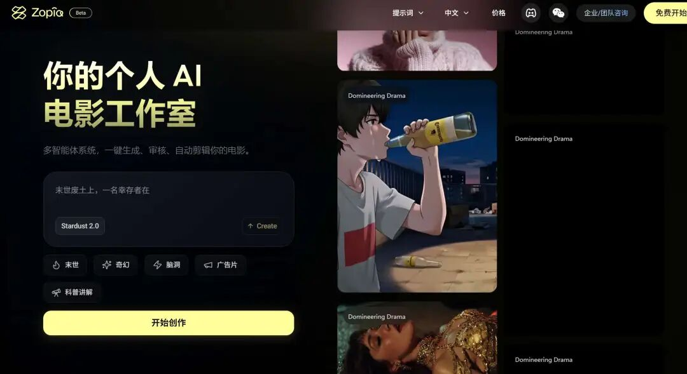
登录后的界面看起来中规中矩：上传剧本、选分镜模版、挑模型……
你可能会说：这和别的平台没区别啊？
Nonono，大不一样！注意看下面这张图有一个小龙虾“Openclaw”的标志，
点开后，就是一个新世界！
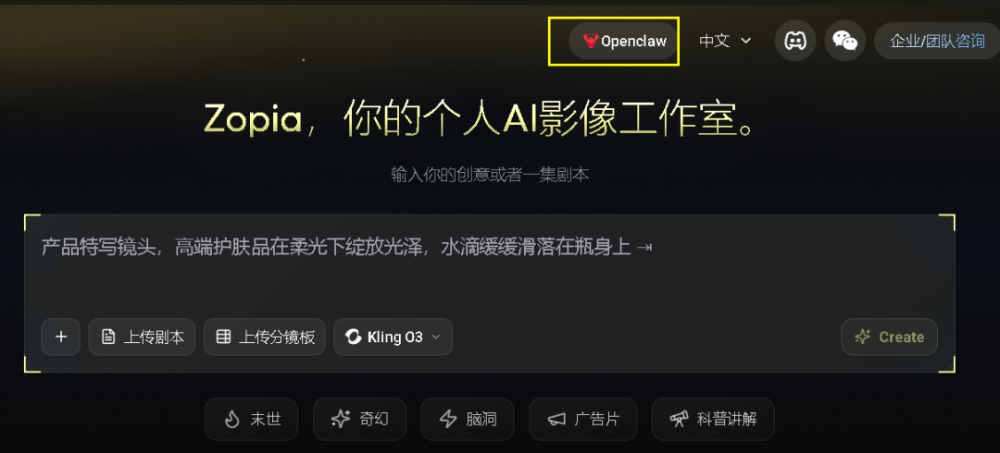
不过你得提前弄好 OpenClaw 的环境。这里不啰嗦，可参考我之前的文章：
《手把手教你安装 OpenClaw 接入飞书，打造你的工作助理》
搞定龙虾后，去 Zopia 官网注册个账号。
登录后，首页点击找到“OpenClaw”, 点击进入以下界面。点一下“我是智能体”，把提示词复制下来。
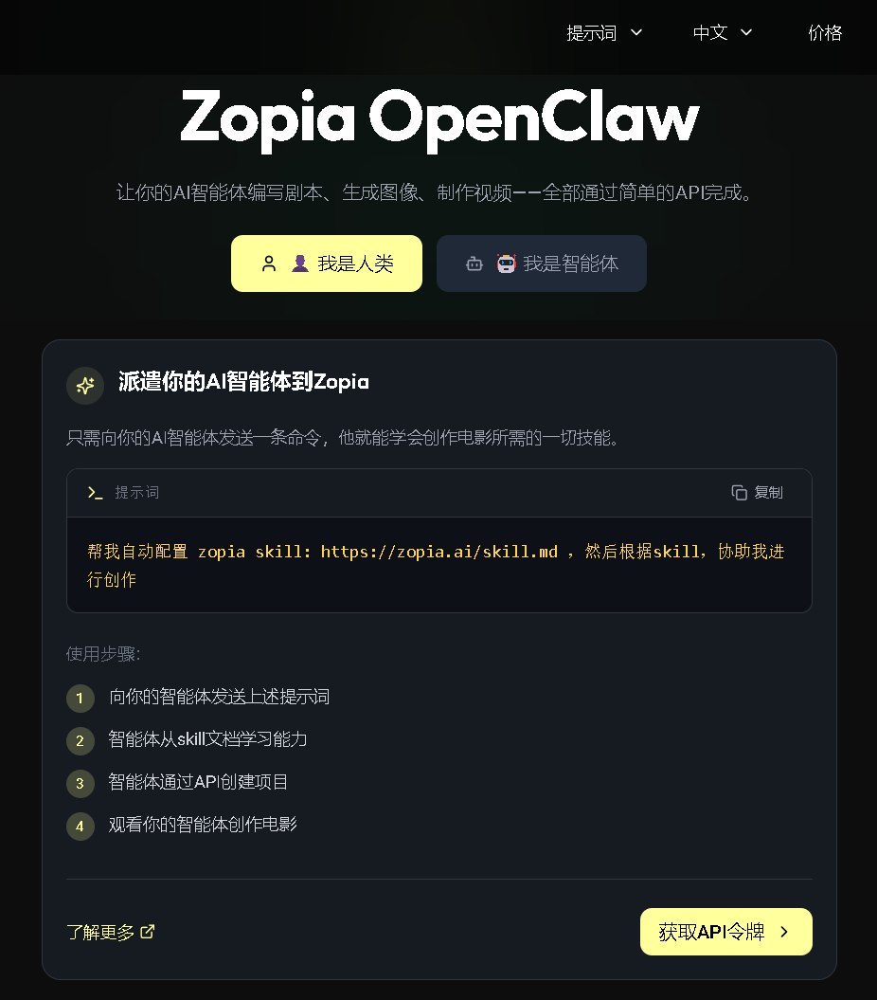
然后回到打通了 OpenClaw 的通讯软件。飞书、微信都可以。
我这次用 QQ 做演示，在 QQ 中找到龙虾机器人“虾饼”。
先在 QQ 对话框输入一个 "/status"，给大家看看我龙虾的配置。
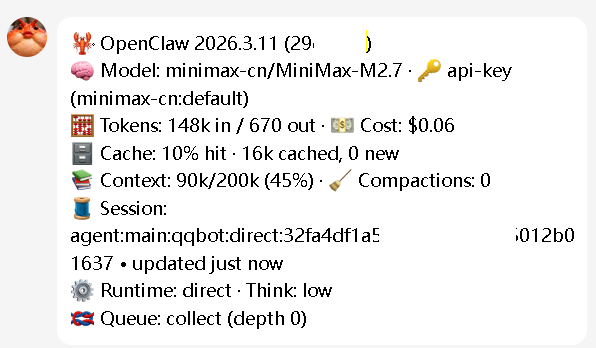
AI是大模型是龙虾机器人的“大脑”，清风建议选择最近大火的 Minimax 2.7 或者 Xiaomi Pro-2，逻辑很强。
言归正传。我直接把刚才的词粘贴到 QQ 对话框，点发送。
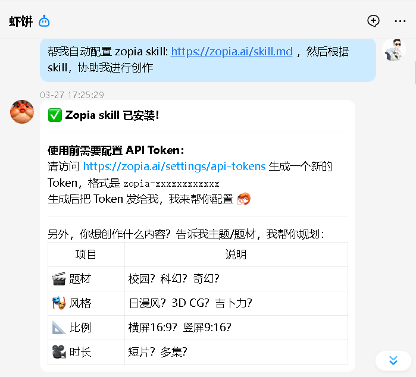
稍微等个十多秒。龙虾会提示安装成功，还会提示你提供 API 秘钥。
这时候咱们再切回 Zopia。点击“我是人类”，然后获取 API 秘钥。
Zopia 平台会给你一串专属密钥。复制好，再回 QQ那边，把这串密钥发给龙虾，zopia 与龙虾连接成功！
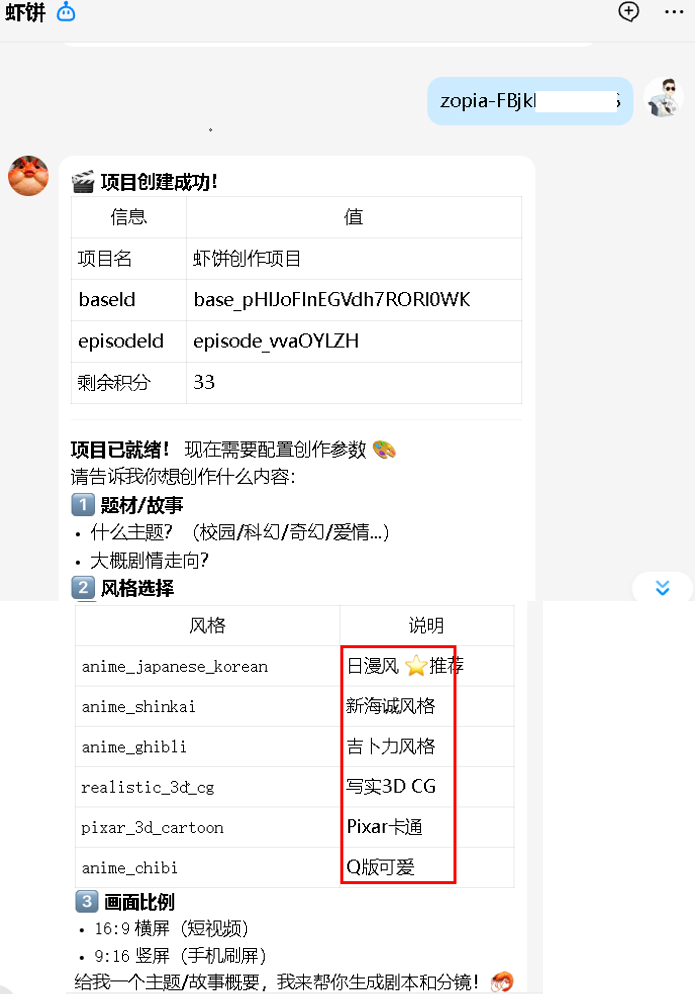
第二步：对话式“拍片”实操
接下来的过程极度舒适：龙虾和Zopia会像导演一样，自动引导你确定风格、主题。
全流程自动化： 跟着 AI 提示，一步步搞定 剧本 ✅ 角色 ✅ 分镜 ✅ 关键帧。
先丢个主题给他，聊聊几句的一个思路也行！
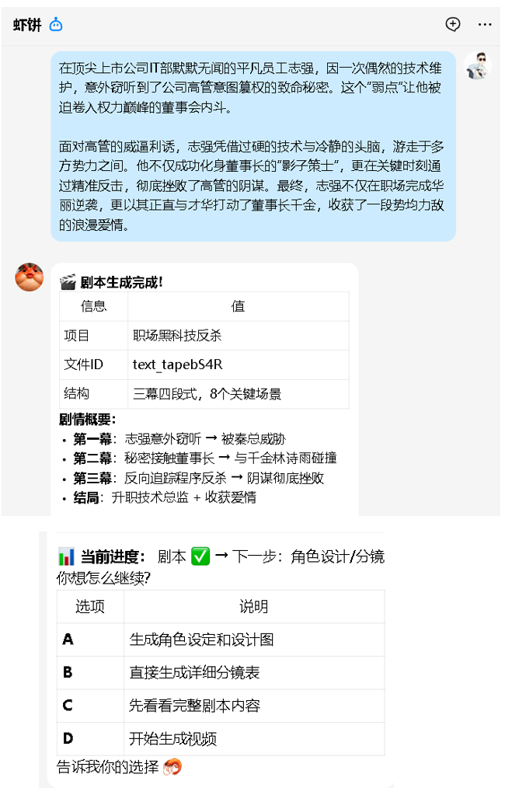
龙虾会与平台互动，自动帮你写剧本，做人物形象设计：
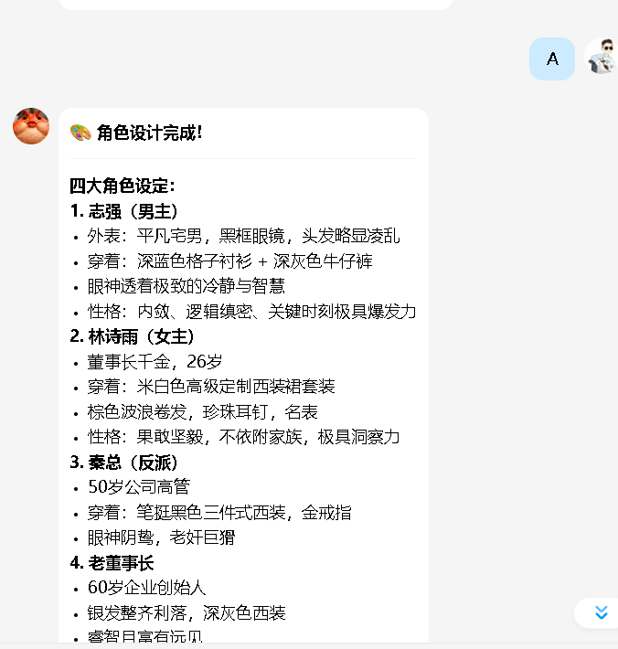
确认形象： 龙虾会自动发送 Zopia 生成的角色草图到你 QQ 上，请你确认：
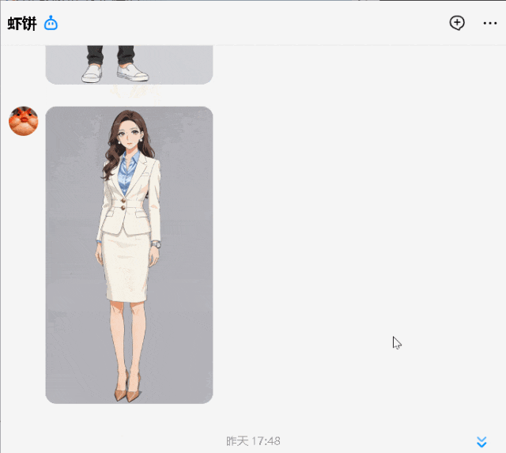
不满意怎么办？通过 QQ 与龙虾直接对话修改！
“A，女主要整得漂亮性感一点。”
“给这一段加个反转，男主突然发现自己是首富。”
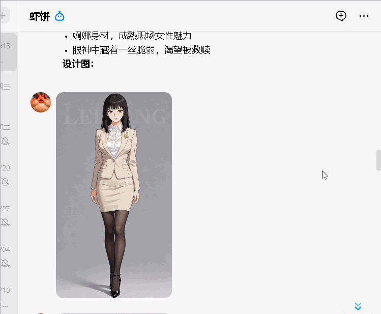
还可以提出新情节，小龙虾会继续对接 Zopia 平台，自动调整分镜和脚本，再从 QQ 对话框返回给你：
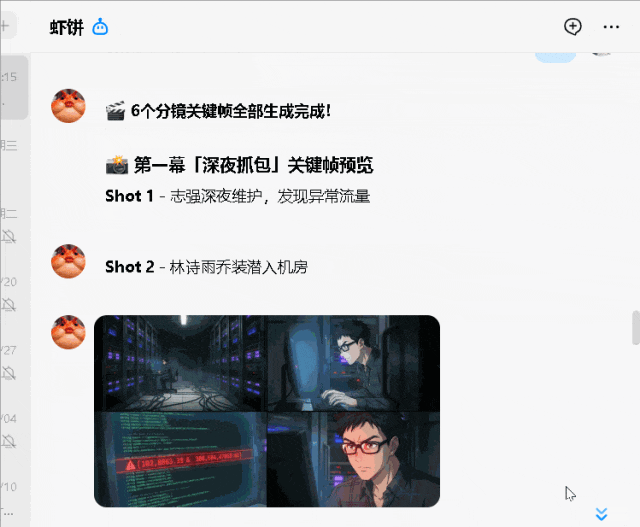
如果你没有给出具体情节，AI 会帮你补全，
比如，爹死妈病弟上学这些狗血、反转的剧情：
这种交互感，比自己去后台拉参数爽太多了，全程丝滑操作下来，感觉Zopia就是导演+制片人！
第三步：成片与渲染
16 个分镜刚跑完，Zopia 就通过龙虾把视频发到 QQ 找你确认了。点开一看，好家伙：画面、运镜、配音、音效，居然全都有了！
这全靠 Zopia 平台的硬核功力。它可不只会写剧本、列分镜、画人物，连那种带入感的台词设计、场景配置也全都包圆了。最绝的是，它能盯着剧情走位，自动配上专业级的运镜，连人物配音和环境音效都严丝合缝。
搁在以前，这每一步都得让人掉头发，反复调优累个半死。现在倒好，Zopia 甩手就是一个全自动，统统帮你搞定了！
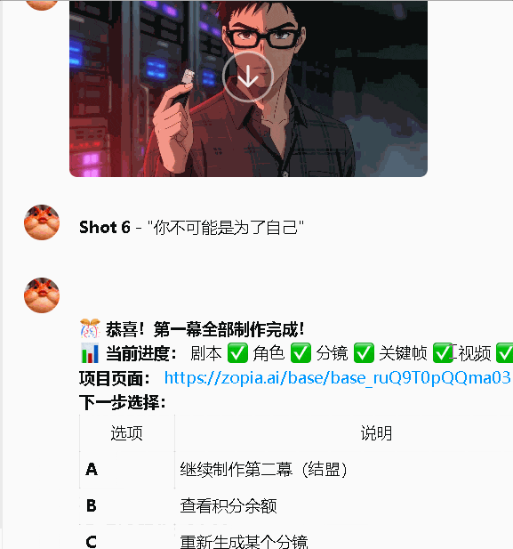
龙虾还顺道给你汇报个项目总结：
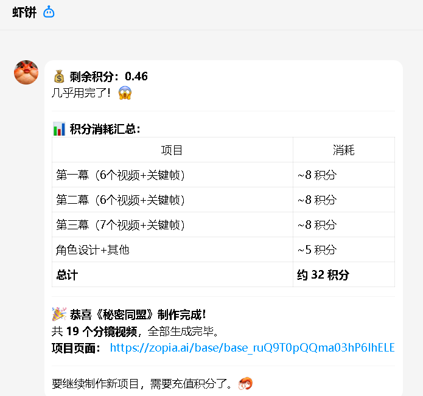
最让人大开眼界的部分来了！
当你回到 Zopia 后台（zopia.ai），你会发现刚才在 QQ 里“闲聊”出的项目已经整齐地躺在那了。
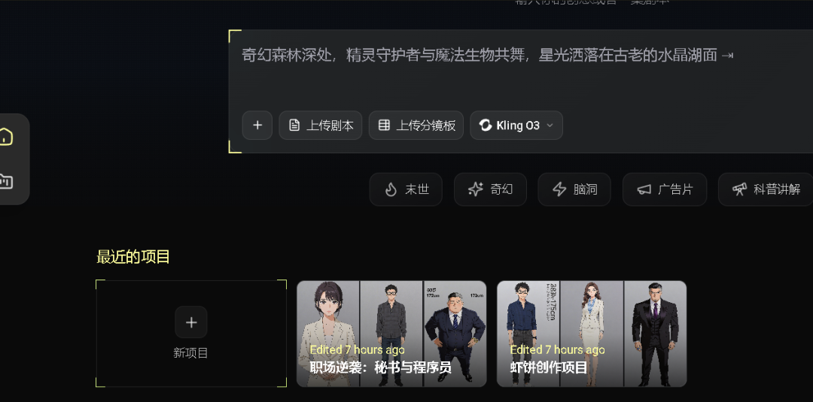
点开看看，你会发现，平台内嵌的工作流、各种设置，非常复杂：
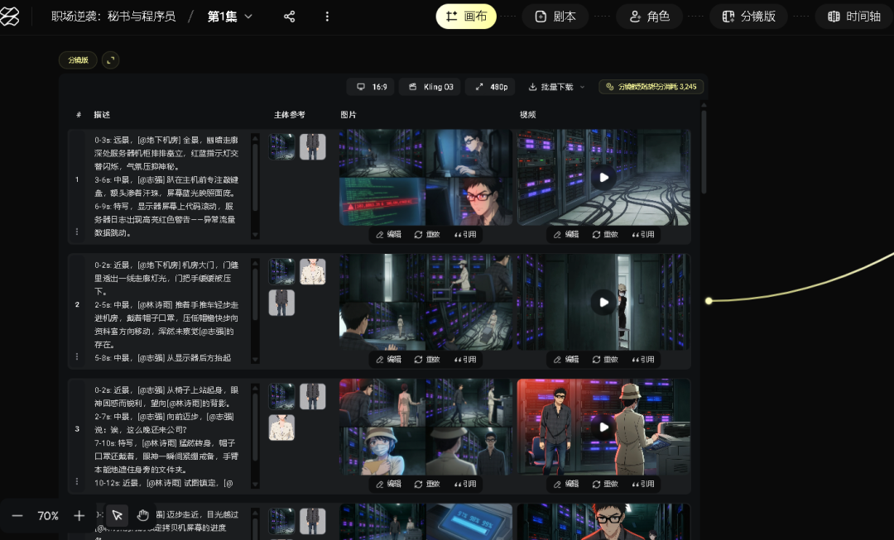
各种设置，让人眼花缭乱：
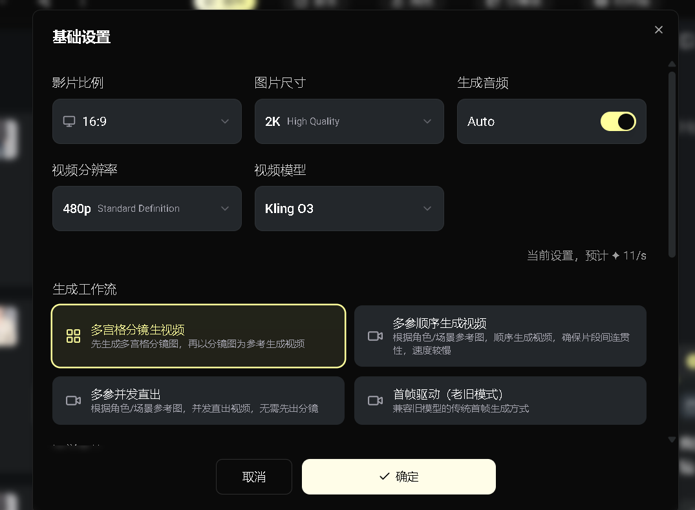
这就是魅力所在：
前端简单： 全程手机 QQ 指挥，随时随地当导演。
后端专业： 平台内嵌了 Seedance 2.0 引擎，支持随时回后台精修。
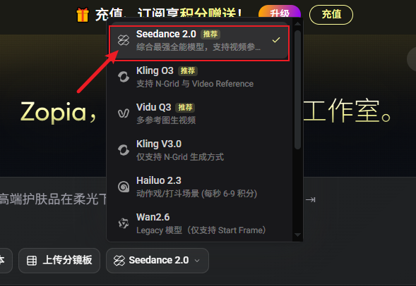
最后点渲染，就会导出整个视频
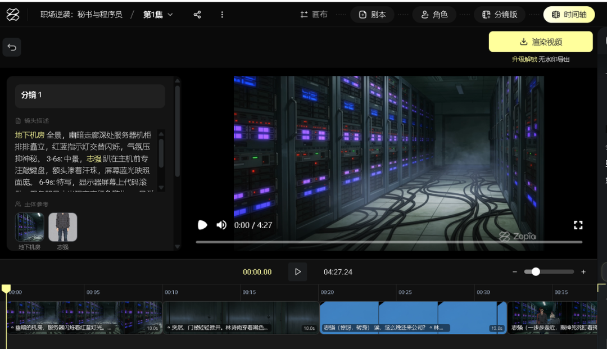
结论：这不是"更好的生图工具"，这是"导演系统"
市面上那些 AI 视频工具，从 Runway、Pika 到可灵、Sora…… ，我基本都翻过牌子。
怎么说呢？它们更像是“好用的锤子”：你给个指令，它吐出一段视频。但问题在于，短剧绝不是一段段视频的简单堆砌，它是几十甚至上百个镜头的有机组合。镜头间的逻辑、情绪的递进、人物和剧情的连贯，这些才是最难啃的硬骨头。
我也试过不少 AI 短剧平台，但之前的工具大多是在让你“玩积木”：扔给你一堆形状各异的零件，让你自己苦哈哈地去拼。要么流程死板得要命，要么技术门槛高得吓人，根本跟不上咱天马行空的想法。
而 Zopia 彻底把这事儿整明白了。它把那些繁杂的流程和硬核的技术全都藏在了后台，跑得极度丝滑。在 Zopia 加持下，你不需要当搬砖的技术工，你只需要负责出点子、搞创意，剩下的全交给这位“导演”就行了。
Zopia + OpenClaw 解决了两个核心痛点：
第一是“一致性”。 不管是场景、道具、人物，还是配音和 BGM，全都稳如泰山。你再也不用担心上一帧还是金发碧眼，下一帧就突变成亚裔了。Zopia 最核心的 Seedance 2.0 模型直接锁死了五官和服装，无论镜头怎么切，人物绝对不走脸，场景和道具、配音也始终对得上号，这种跨镜头的稳定性是批量生产视频的必要保证。
第二是“生产效率”： 对比传统方式，用Zopia做视频简直是降维打击：1 小时就能跑通 15 分钟的长成片。算下来，单台机器一天就能产出 200 分钟的内容，这分量足够一个日更频道连播 4 天都不带重样的。
你不需要精于技术，不需要浪费时间调细节，不需要焦虑“我上一集那个女主长什么样来着？”，你只专注于创意，提出要求，Zopia 统统帮你搞定。
此外，Zopia还有一个杀手锏：多集内容支持。
点击“下一集”按钮后，所有角色、场景、资产自动延续。以前做短剧是“磨洋工”，有了Zopia，直接变成“流水线”。
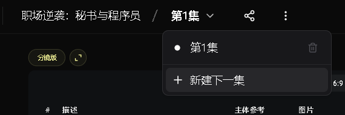
整部剧集，一个空间管理。
有了龙虾和Seedanc 2.0的加持对做系列短剧的人来说，效率提升不是 50%，是 10 倍。
因为做短剧不是1集，而是一个IP下的几十集，上百集。
以前这件事要靠人工盯。现在 Zopia+AI龙虾帮你搞定。
谁适合用 Zopia？
说几句真话。
适合的人：
有短视频运营经验，知道什么题材能火；
能写有吸引力的故事大纲；
想做副业但没时间没团队的个人；
想出海做内容（海外短剧付费转化率比国内高）的商家；
想在各大短视频做引流获客短视频的传统商家们
还有几个坑要提前知道：
大概 95%的镜头质量过关，剩下的需要微调，当然，不精益求精也能直接用！
同质化会越来越严重，选题、创新、剧情设计才是核心壁垒。
写在最后
2007 年，乔布斯掏出第一代 iPhone 的时候，诺基亚的人在台下笑了。
"这玩意儿连个实体键盘都没有。"
10 年后，诺基亚没了。
AI 短剧现在就在"第一代 iPhone"的阶段。不完美，有瑕疵，但底层逻辑已经通了。
当一个人就能撑起一个短剧频道的时候，那些 10 个人的团队，靠什么赢？
先动手的人，永远能吃到第一口肉。
基础功能免费。每天有积分，就在 Zopia.ai。
先做一条出来，就超过了 99%的人！
🎁 福利1： 想要文中提到的“AI 短剧变现资料包”吗？
关注公众号，回复【短剧】即可领取！
🎁 福利2： 注册得积分！使用以下链接（点击“阅读原文”）注册，即可获得50积分（限前20名）邀请送了20积分，签到送50积分，注册送100积分。
https://zopia.ai/affiliate?aff=vh9I09Ty
互动话题： 你觉得 AI 短剧最难的地方在哪？评论区聊聊，清风为你解答。